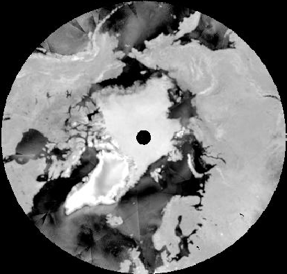
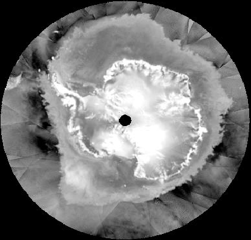

Spaceborne scatterometry of the cryosphere: a review
  Fig. 1. QuikSCAT backscatter images: northern (top) and southern (bottom) hemispheres (NASA JPL, 2003a). |
John Maurer
This paper was written as part of a graduate course ("History and Theory of Geography") in the Department of Geography at the University of Colorado at Boulder. December, 2003 Scatterometry is a form of radar that can measure various geophysical properties of surfaces and volumes based on the amplitude of microwave electromagnetic pulses that are transmitted and scattered back to a sensor. Though originally designed to measure wind over the oceans, various applications to snow and ice (i.e. the “cryosphere”) have been developed. This paper outlines the physical principles and twenty-five year history of spaceborne scatterometry remote sensing and then reviews the literature regarding its cryospheric applications. Frequent global coverage and sensitivity to snow and ice make spaceborne scatterometry an important tool for monitoring the ice sheets, global snow cover, and sea ice extent. |
Introduction
• Importance
of the cryosphere • What
is scatterometry?
Cryospheric applications of scatterometry • Problems,
issues, and future directions • Conclusion
• References
The “cryosphere” (from the Greek kryos, for cold) is wherever water exists in the ice phase as a result of sub-freezing temperatures, including snow, ice, and frozen soil. Forms of ice include those on land—glaciers and ice sheets (i.e. extensive continental glaciers on Greenland and Antarctica); as well as those that float in the ocean: ice shelves extending out from ice sheets into the surrounding sea, icebergs that calve off of adjoining ice sheets into the open ocean, and frozen ocean water, or sea ice. Scatterometry is a form of radar remote sensing, sending short pulses of microwave electromagnetic radiation to the surface and measuring the power, or amplitude, of those pulses that bounce, or “scatter,” back to the sensor. Based on the amplitude of these backscattered pulses relative to the amplitude of the transmitted pulses, various geophysical properties can be inferred about the illuminated surface or volume.
The original intention for launching scatterometers into orbit around the planet was to use the backscattered signals to infer the direction and velocity of winds over the oceans: information which is critical for monitoring synoptic scale atmospheric and oceanic circulation patterns that can be used for the study of weather and climate. Land and cryospheric applications of spaceborne scatterometry remote sensing have arisen as a successful and important alternative usage of these data. In this paper, I will review the various cryospheric applications that have been studied in the twenty-five years since the first scatterometer was launched into orbit, which include mapping of snow cover and sea ice extent as well as sea ice motion, detection of melt, classification of various types of sea ice, measurement of snow accumulation, and inferring the direction of wind patterns over Antarctica.
I will begin with a brief discussion of the importance of monitoring and studying the cryosphere. Then I will give an overview of how scatterometers work, their history in space, and how the data are manipulated for use. Having provided the necessary background information, then, I will explain the various cryospheric applications of scatterometry, reviewing the literature and various studies that have been published for the most part in the past ten years. Lastly, I will summarize the various problems and issues with scatterometry that must be considered and provide some thoughts on future directions before concluding.
NEXT  Importance
of the cryosphere
Importance
of the cryosphere
Introduction
• Importance
of the cryosphere • What
is scatterometry?
Cryospheric applications of scatterometry • Problems,
issues, and future directions • Conclusion
• References
© 2004,